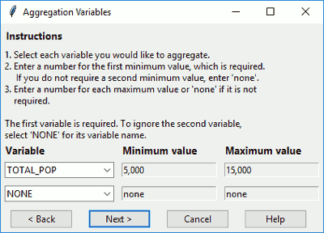

This function opens a dialog window for the user to select which variables in the shapefile should be aggregated and to what minimum and maximum values. The dialog window looks like this.

Figure: Dialog to select your aggregators
Select your desired aggregation variables. If you do not want to include a second aggregation variable, select "NONE". Enter your desired minimum and maximum values in the relevant boxes. Then click on one of the following buttons.
Click Next to continue to the next step.
Click Cancel to end GAT.
Click Back to return to the previous step.
Click Help to get further guidance and open the manual.
inputGATaggregators(
shp,
step = 4,
min1 = "5,000",
min2 = "none",
max1 = "none",
max2 = "none",
var1 = "",
var2 = "NONE",
backopt = TRUE
)Spatial layer.
Integer step in GAT, for help reference.
Minimum value for the first aggregation variable.
Minimum value for the second aggregation variable.
Maximum value for the first aggregation variable.
Maximum value for the second aggregation variable.
Name of the first aggregation variable.
Name of the second aggregation variable.
Boolean denoting whether to include the back button.
For the minimum and maximum values, only positive or negative numbers, commas, and decimals are allowed. If you enter any other characters, the function will allow it, but GAT will run a check that triggers the function inputGATvalue() to force you to enter a number.
if (interactive()) {
inputGATaggregators(shp = hftown)
}